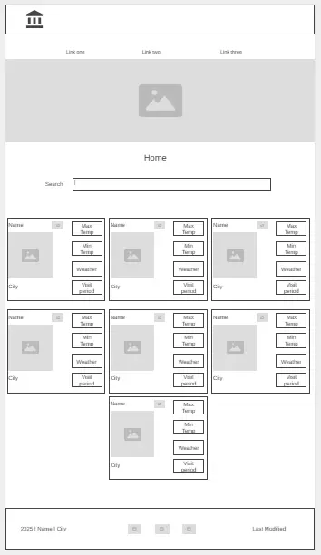

Travel Destination Guide in Nigeria
- Travel Guide (http://travelguide.ng) It provides users with helpful information and guidance about various travel destinations around Nigeria. It's simple, descriptive, and easy to remember.
Site Purpose
- The purpose of the Travel Destination Guide website is to help users explore and learn about popular travel destinations by providing essential information such as the best time to visit, top attractions, accommodations, and travel tips. It aims to inspire and assist travelers in planning their trips more efficiently and confidently.
Scenarios
- Location Details
- When is the best time to visit
- Is accomodations available and cost
- What activities and landmarks(attractions) are available
- How safe is it to travel to destination
Color Schema
Color Palette: https://coolors.co
Used on:
1. Header and Footer Color: #7dd520
2. Body: #f5fced
Nav Element border on hover: #f2db33
Typography
Font Family: Roboto Cedarville Cursive
Used on:
1. Body - Roboto
2. H1 Heading - Cedarville Cursive
Wireframe:
Desktop View
